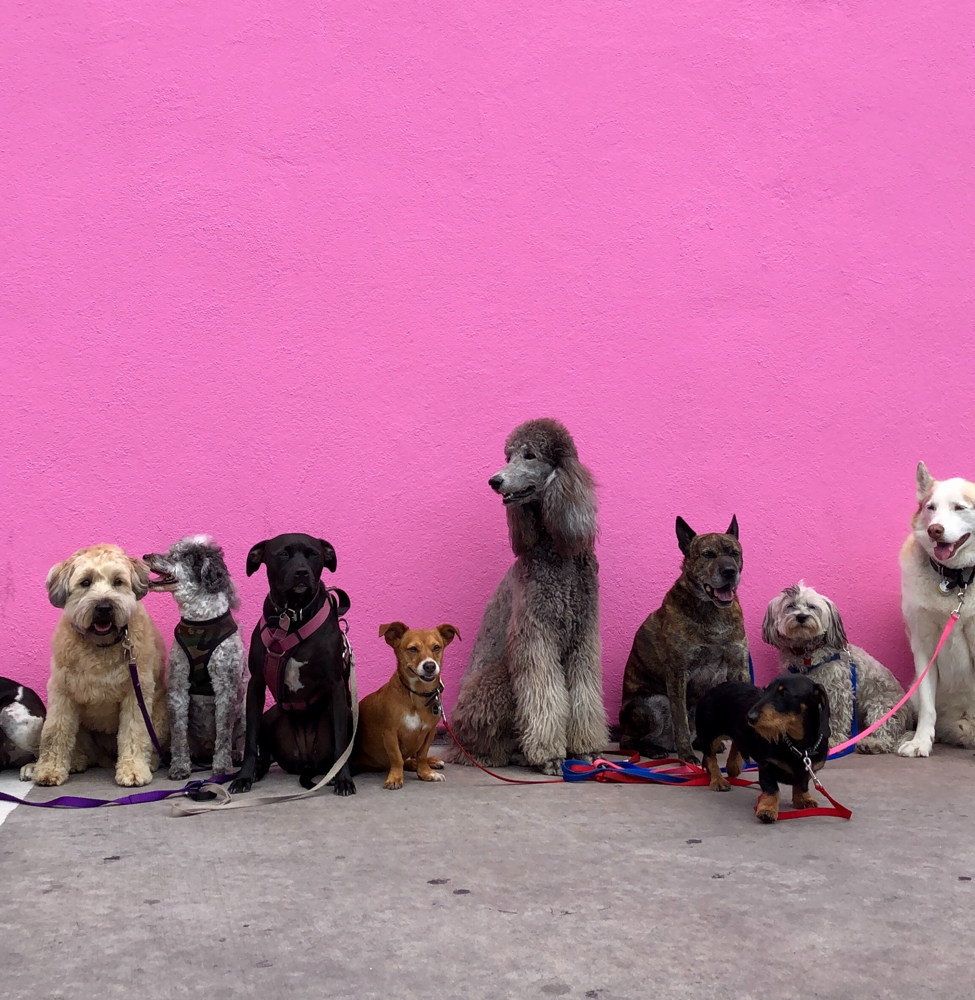

Pets World
Welcome to our adoption centre:
We rehome pets in Ireland. Please observe the information below for what to expect during the adoption process

Adoption Process
Learn more about how we rehome our lovely pets and what happens after:
- 1. Compassionate matching of pets with loving homes
- 2. Pre-adoption behavioral assessments and support
- 3. Veterinary care, including vaccinations and spay/neuter procedures
- 4. Post-adoption support and resources for new pet owners
- 5. Community outreach and education programs on responsible pet ownership
Contact Information
| Branch | Contact Name | Phone Number | Email Address |
|---|---|---|---|
| Dublin | John Delaney | 0875566392 | john@petsworld.ie |
| Dublin | Max Byrne | 0834212345 | max@petsworld.ie |
| Dublin | Oisin O'Malley | 0867538209 | oisin@petsworld.ie |